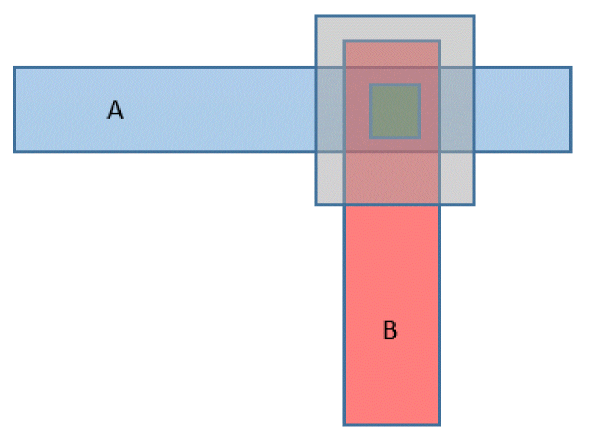
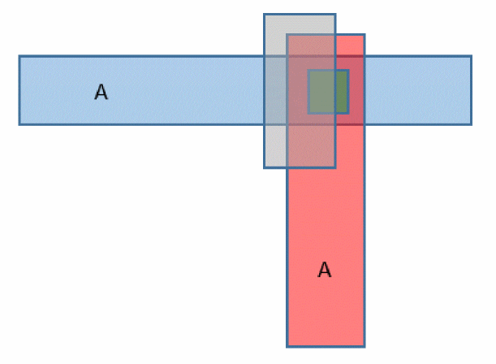

Support for Cut Shape Trimming during Extraction
Let us consider a few scenarios illustrating how cut shapes on a validLayer can be trimmed, and how the extractor treats such connections.
Scenario 1: Two metal shapes that are disconnected because the cut shape is completely trimmed
In the figure below, the two metal shapes are disconnected. The cut shape is completely trimmed, it does not gain connectivity from either net and exists as a floating shape.

Scenario 2: Two metal shapes connected by a partially-trimmed cut shape
In the figure below, two metal shapes are connected by a shape that is partially cut. Partially-trimmed cut shapes acquire the connectivity of the connected metal shapes. In this case, the cut shape is assigned to net A.

Related Topics
Return to top